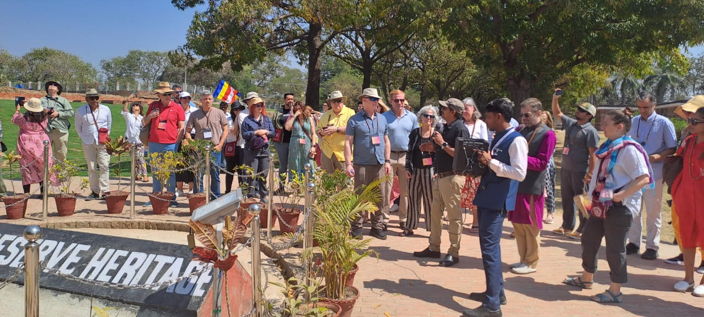
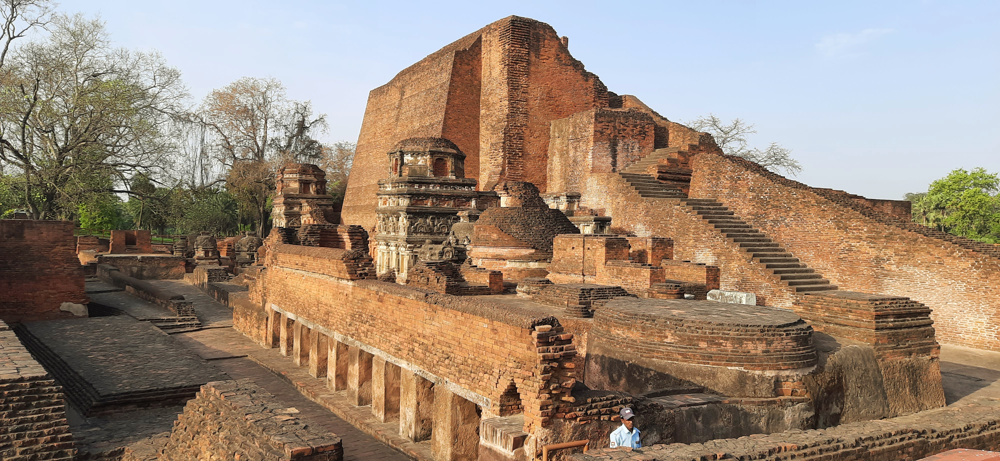
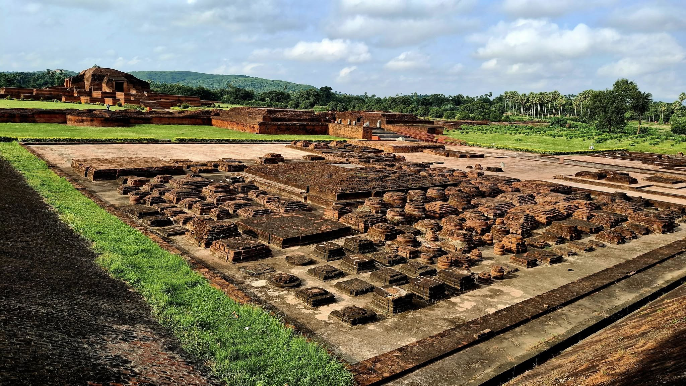
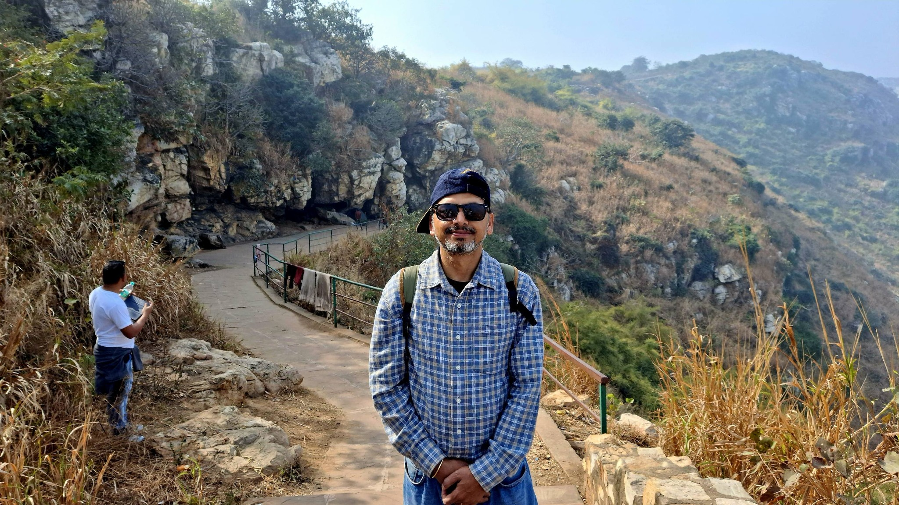
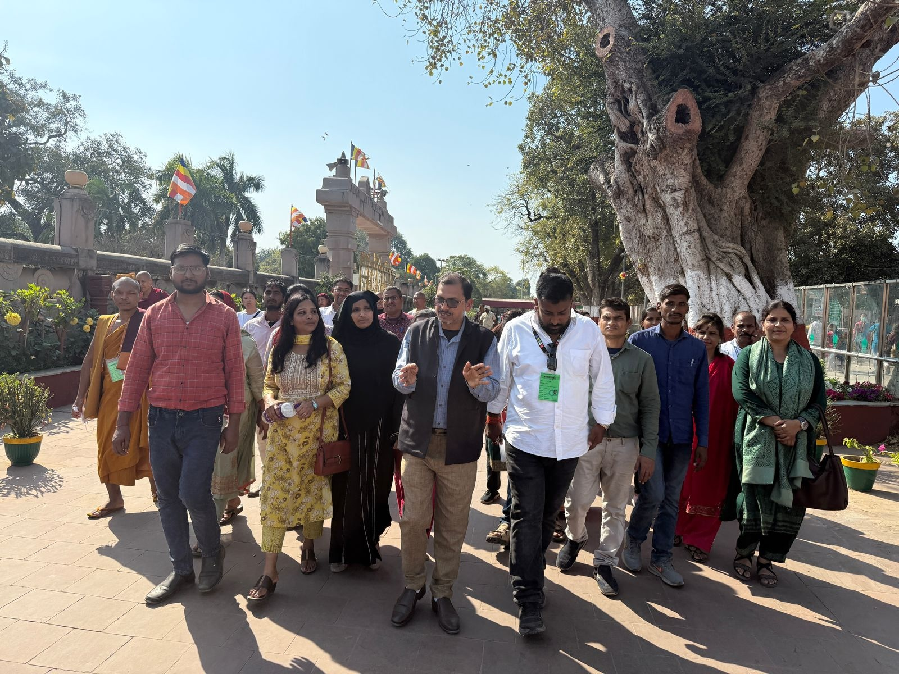
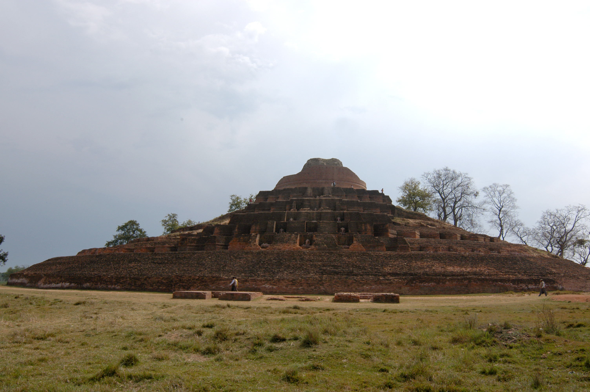
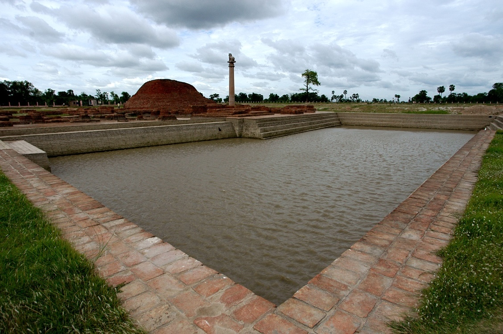
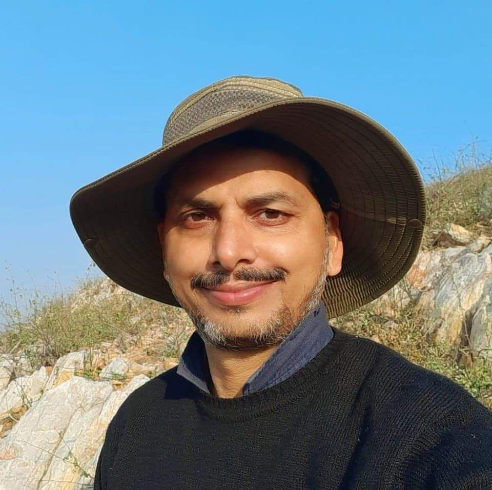

Buddhist Circuit & Archaeological Landscapes of Bihar
A scholarly initiative exploring the archaeological and sacred landscapes of the Middle Ganga Valley and the Himalayan foothills. From the Mahabodhi Temple to the ancient monastic university of Nalanda — led by Mr. Shanker Sharma, an archaeologist with 25 years in the field.
Start a Conversation







Mr. Shanker Sharma is an archaeologist and academic with nearly twenty-five years of professional experience in field archaeology, heritage management, and museum administration. He currently serves as Assistant Professor in the P.G. Department of Ancient Indian & Asian Studies at Magadh University, Bodh Gaya, Bihar.
The Middle Ganga Valley — particularly the historic region of Magadh and northern Bihar — preserves archaeological remains associated with early urbanization, the rise of Buddhism and Jainism, Mauryan imperial architecture, monastic universities, and long-distance trade routes.
The heartland of Buddhism — from the Mahabodhi Temple through ancient Rajgriha, the monastic ruins of Nalanda, the Mauryan capital at Pataliputra, and the earliest rock-cut caves at Barabar and Nagarjuni.
Early historic and Buddhist sites of northern Bihar — Vaishali, the great stupa at Kesariya, Ashokan pillars at Lauriya Areraj, Lauriya Nandangarh, and the twin pillars at Rampurva.
Major sites of eastern Bihar including the monastic university at Vikramshila, early historic fort ruins, rock-cut sculptures at Pattharghatta, and stupa mounds across the Champa region.
The complete pilgrimage and archaeological circuit spanning Bihar, Uttar Pradesh, and Nepal — tracing the Buddha's life from Lumbini through Bodh Gaya, Sarnath, and Kushinagar.
A dedicated epigraphic circuit covering major Ashokan pillar sites and rock edict locations — from Vaishali through Sarnath, Kausambi, and Delhi-Topra.
A focused study of the great Buddhist monastic learning centres that shaped intellectual history across Asia — examining architectural remains, spatial organisation, and scholarly traditions.
There are no fixed dates, no standard itineraries, no packaged tours. Every expedition is shaped entirely through dialogue — your research interests, your timeline, your scholarly objectives.
Write to me about your research interests, the sites or circuits you wish to explore, and the nature of your scholarly work.
I understand your academic background, preferred circuits, group size, and objectives. Together we shape an itinerary that serves your research.
Dates, duration, logistics, and focus areas — all decided through our correspondence. Nothing standardised. Everything built around you.
We explore the sites together. On-ground archaeological insights, scholarly discussions, and the kind of access only decades of fieldwork can offer.
Whether you are a solo researcher, a small cohort, or a larger academic delegation — write to me and we will determine the format that best serves your scholarly objectives.
A deeply personal, one-on-one scholarly journey across the circuits of your choice. Ideal for doctoral researchers, independent scholars, or visiting academics. I host you personally — logistics, local transport, and site access are all arranged by me.
Itinerary, dates, and duration — all decided through our conversation.
A collaborative expedition for small research groups, thesis cohorts, or academic colleagues. The intimacy of the group allows for rich on-site discussions and cross-pollination of ideas. Fully hosted and managed by me.
Write with your group's composition and research interests.
For university field trips, academic delegations, or research organisations. You manage your logistics; I bring 25 years of site-specific archaeological knowledge, on-site lectures, and scholarly context to your itinerary.
Prerequisite: All participants must have foundational knowledge of archaeology or history. A brief screening conversation is part of the process.
Mr. Sharma has extensive field experience across several of India's most important archaeological regions — Rakhigarhi, Rajgir, Nalanda, Vaishali, Pataliputra, Bodh Gaya, Vikramshila, Kesariya, Sarnath, Kushinagar, Sanchi, Bharhut, Ladakh, and major Buddhist sites of Odisha such as Lalitgiri and Ratnagiri. His explorations also include archaeological landscapes along the ancient Uttarapatha trade route across Bihar and Jharkhand.
His research interests span field archaeology, material culture studies, Buddhist archaeology, heritage management, museology, epigraphy, and early historic architecture — integrating archaeological research with art historical and cultural landscape perspectives.
Several published research papers in archaeology and heritage studies, with presentations at international academic conferences.
Research presented at conferences in:
There are no fixed schedules, no booking forms, no standardised packages. Every expedition begins with an email — tell me about your research interests, your academic background, and what you hope to explore. We will shape something meaningful together.
I respond personally to every inquiry